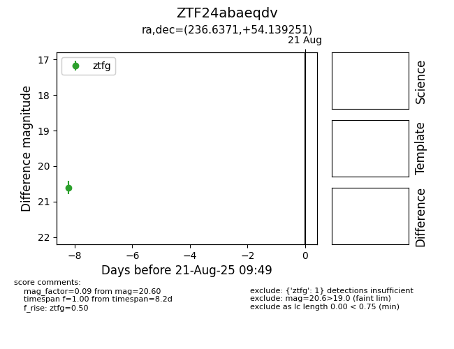

Target ZTF24abaeqdv at 2025-08-21 09:49, see:
FINK: fink-portal.org/ZTF24abaeqdv
Lasair: lasair-ztf.lsst.ac.uk/objects/ZTF24abaeqdv
ALeRCE: alerce.online/object/ZTF24abaeqdv
alt names
ZTF24abaeqdv (ztf,alerce)
coordinates:
equatorial (ra, dec) = (236.6371,+54.13925)
galactic (l, b) = (85.4430,+48.24455)
photometry
last ztfg=20.60
1 ztfg detections
